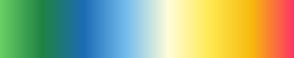

Sv
Sv
 En
En
My process
The idea
I initial had was to create images based on mathematical functions using randomized building blocks. For instance, several pieces start with randomly generated points, where each pixel is assigned a value based on its distance to one or more points. In the final step, the image is colored using these values applied to a specific color palette.

Creation
starts by writing code that is executed to generate images. My goal is to build as much as possible from scratch. This is partly to learn new things along the way, but also to maintain full control over what happens inside the computer. Because of this, I have written my own software from the ground up in C++. I also use my own photographs as a starting point, loading and manipulating them through code.

Printing
is handled in my own studio to maintain full control over quality and colors. I use a professional pigment ink printer (Epson SureColor SC-P900) with archival-grade inks, ensuring the images won't fade over time. The works are printed on Fine Art Cotton Textured Natural II, an acid-free cotton paper with a soft, subtle texture. The paper's natural tone and surface give the images a depth that I feel complements generative art very well.